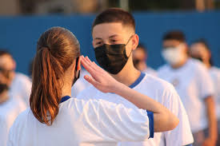

O portão do 6° Colégio da Polícia Militar do Paraná se abre às 06h30min e segue aberto até 07h00min. Dentro do período de chegada os alunos devem guardar suas mochilas dentro das salas de aula e fazer presença à primeira formação que ocorre das 06h55min até 07h10min.
Na formação ocorre a organização de cada turma em seu respectivo local predefinido, a apresentação de comandantes, o hasteamento da bandeira nacional, paranaense e do colégio e por fim o canto do hino.
As aulas se inciam à partir das 07h10min e acabam 12h25min.
Sendo que cada aula dura 50 minutos e tendo 6 aulas por dia elas se separam pelos seguintes horários:
1° aula: 07h10 - 08h00
2° aula 08h00 - 08h50
3° aula 08h50 - 09h40
Intervalo: 09h40 - 09h55
4° aula: 09h55 - 10h45
5° aula: 10h45 - 11h35
6° aula: 11h35 - 12h25
A segunda formação ocorre às 12h25min, onde ocorre recados finais sobre a semana e os alunos serão dispensados bradando "Uma vez CPM! Sempre CPM!", estando liberados até 12h35min